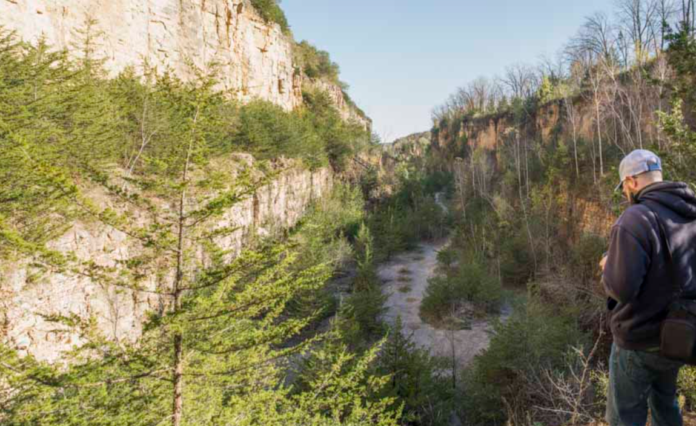

Mines of Spain is basically Dubuque's backyard wilderness, tucked right along the south edge of town where the bluffs meet the Mississippi. It's one of those spots that feels way bigger than it actually is once you're out on the trails, even though it's technically still within city limits.


How It Got Its Name
It's named after Julien Dubuque, the guy the city itself is named for, who struck a deal with the Spanish government to mine lead here. Locals still visit his monument up on the bluff overlooking the river, and it's one of the best views in town, especially around sunset.

Hiking and Nature Today
The park itself is this sprawling mix of woods, prairie, and wetland that most people around here use for hiking or just getting outside. There's a solid network of trails that wind through the bluffs and along Catfish Creek, and in winter it turns into one of the go to